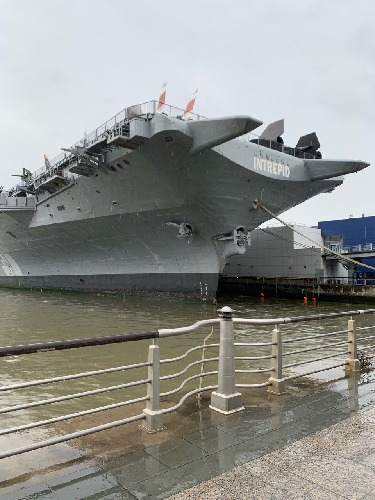
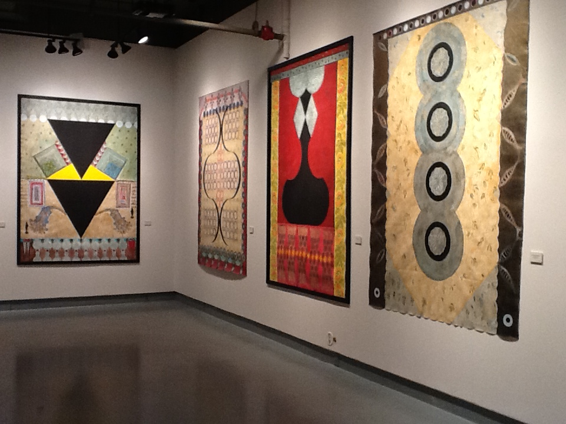
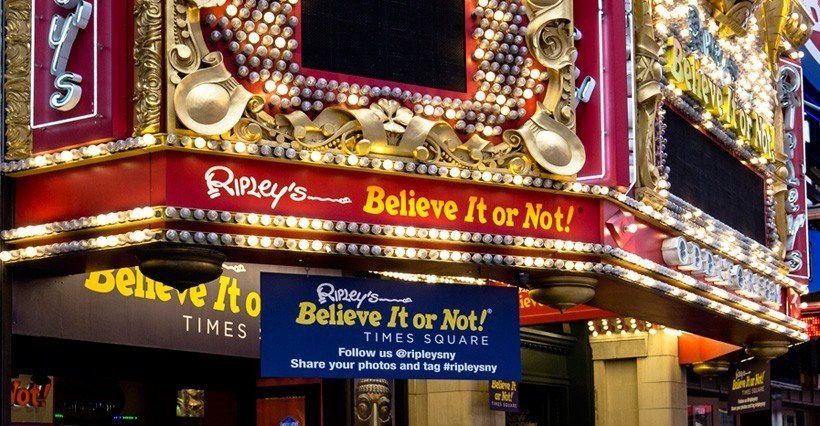
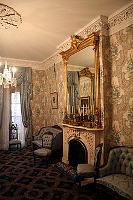
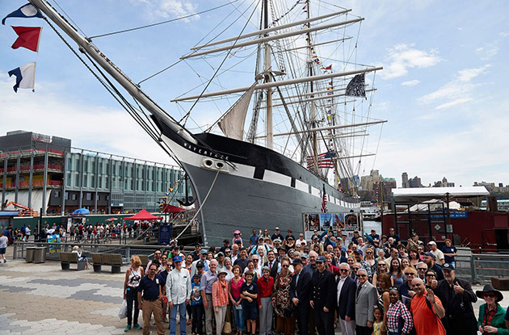

Museums
Museum of Modern Art (MoMA)
"Amazing collection of famous paintings."

Intrepid Sea, Air & Space Museum
"Classic World War display with amazing fighters and classic aircrafts. On top of that, you still can see the historic Enterprise Space Shuttle and the Concord."
Madame Tussauds
"It's so amazing how some of the wax figures look so real!"
Museum of Jewish Heritage
"A memorial to the Holocaust, this Battery Park museum centers on life before, during, and after the Holocaust."

Tibet House US
"History on Buddhism beautiful artwork artifacts."

Ripley's Believe It Or Not! Times Square
"If you go there try the rolling tongue mirror! You won't regret it, and it definitely will be a great reward."

Theodore Roosevelt Birthplace National Historic Site
"A wonderful look at President Theodore Roosevelt's childhood home and early life."

South Street Seaport Museum
"A gem. Skip the mall, check out the ships, Bowne, and the liner exhibit."